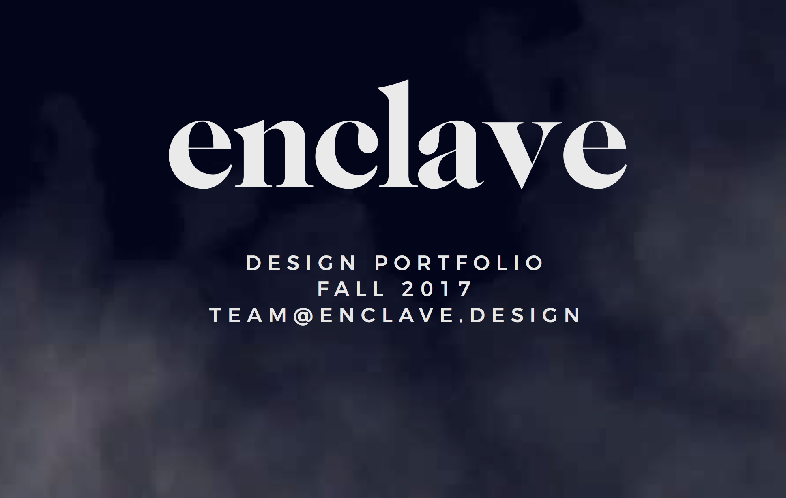
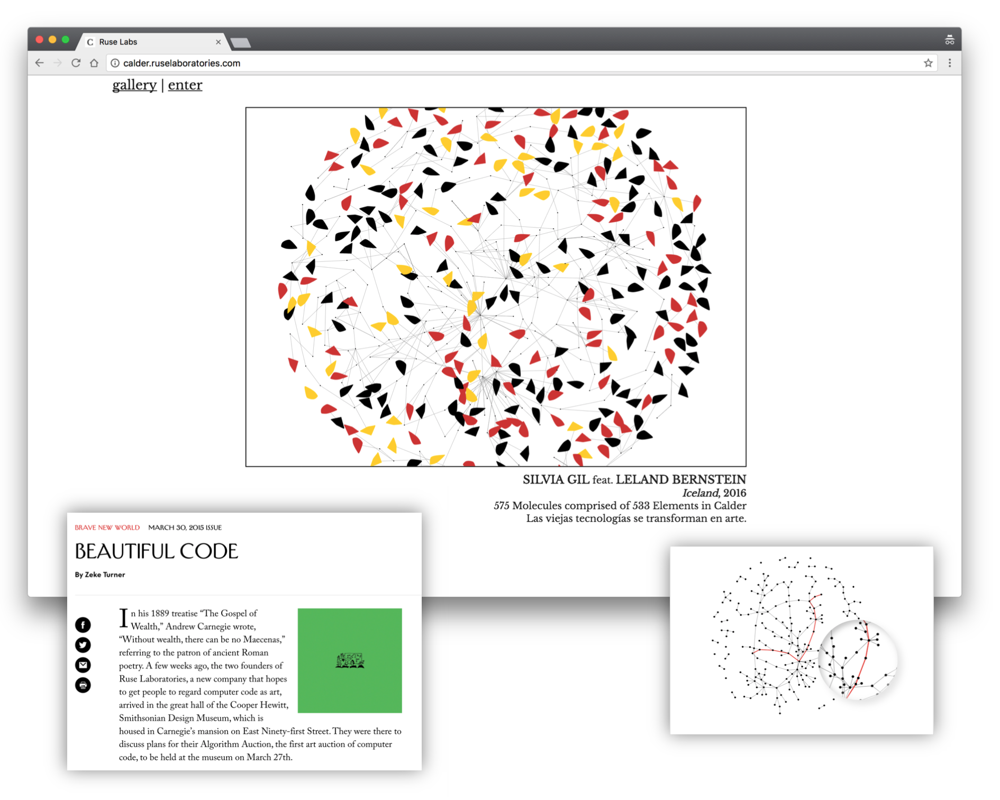
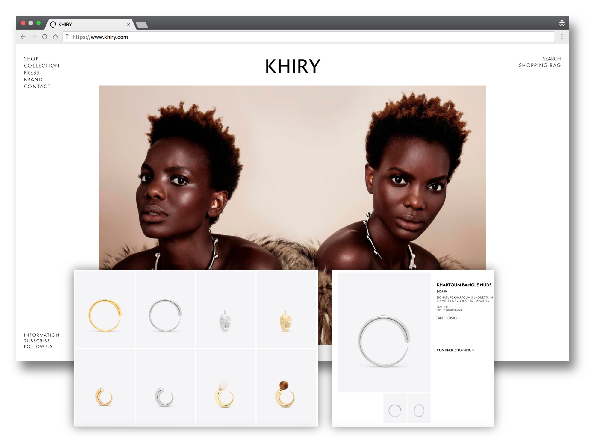
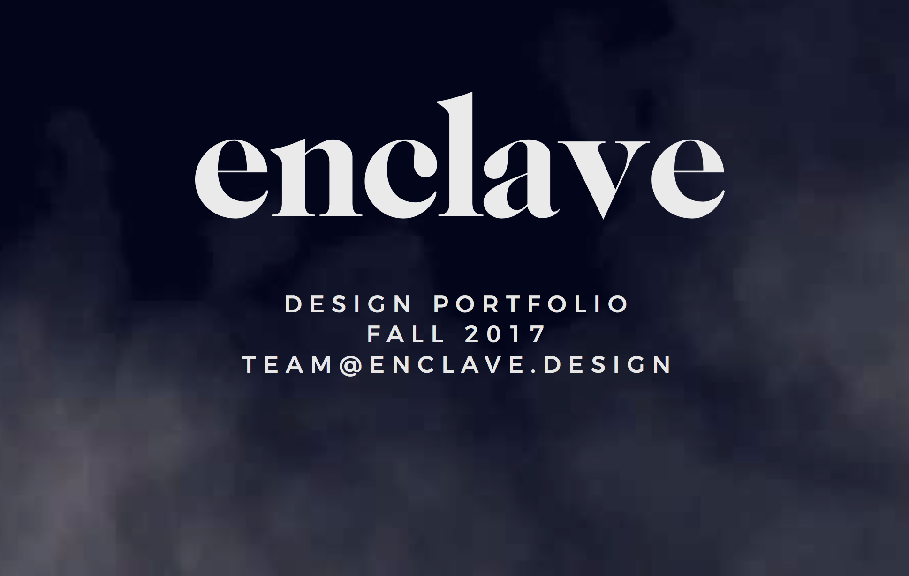
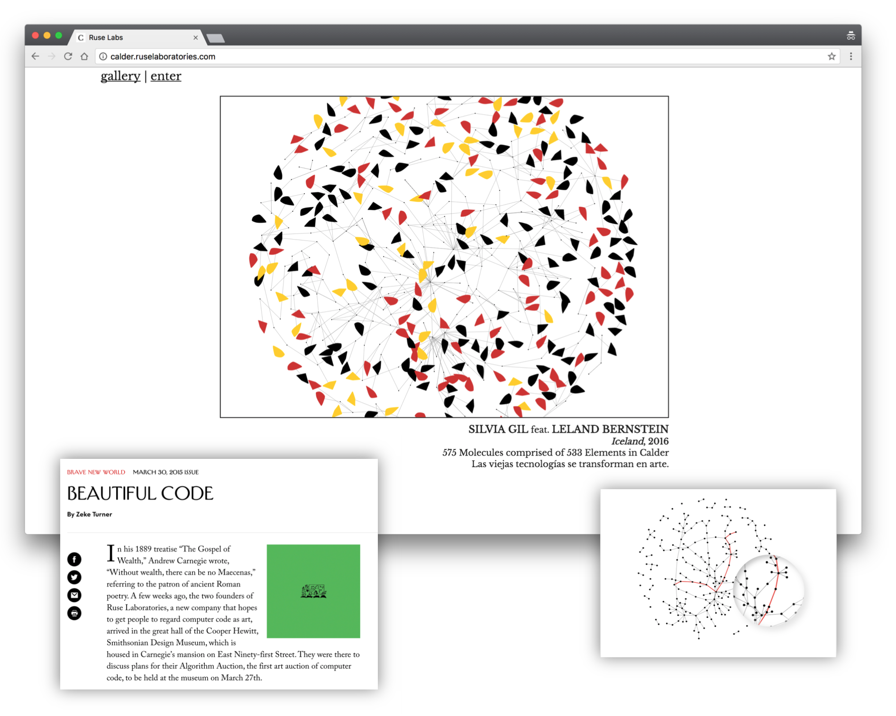
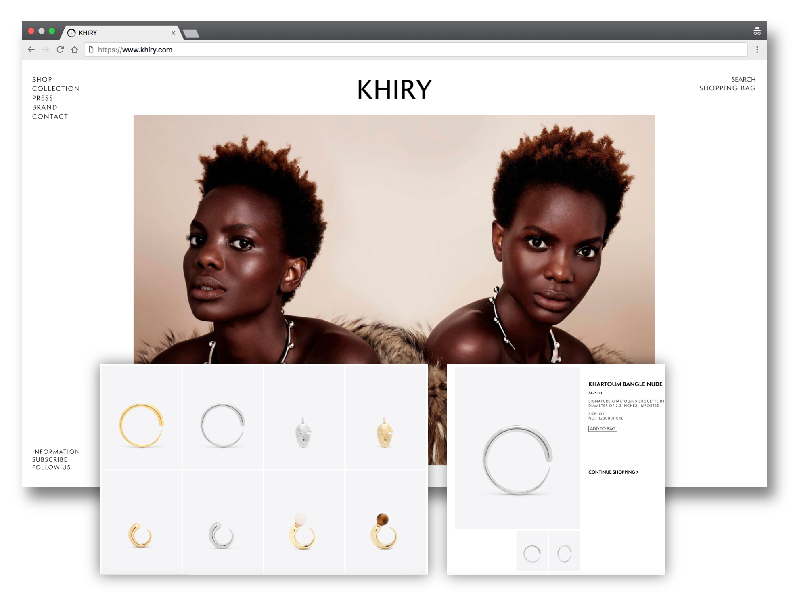
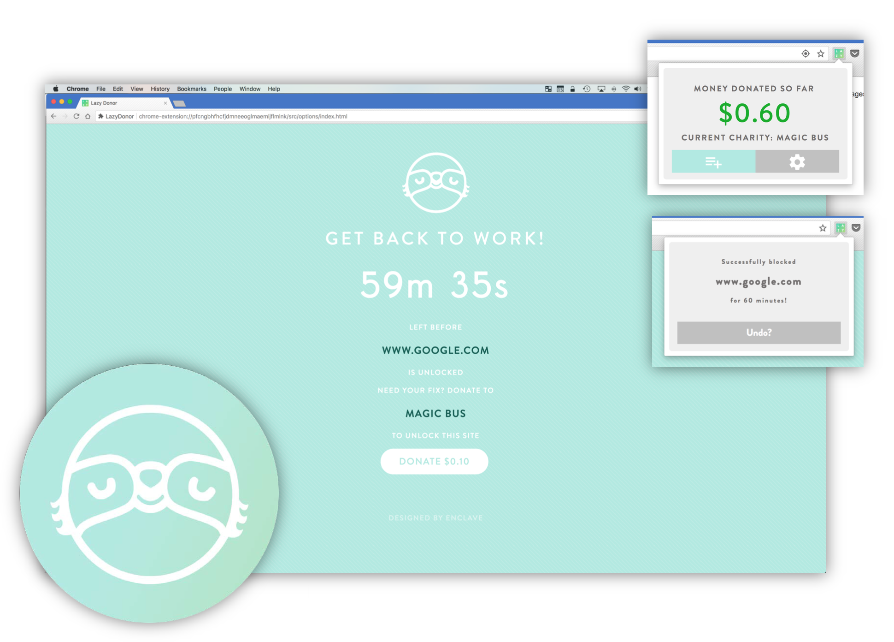
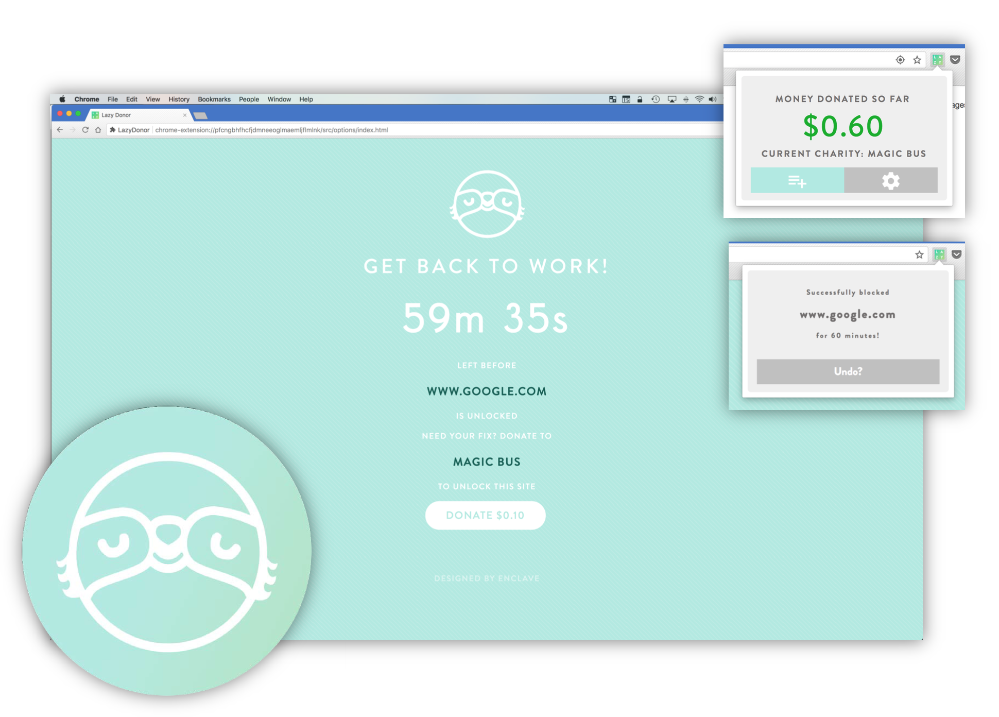

Luke Carlson
projects | resume | github | emailIntro
Hi I’m Luke Carlson, a masters student at the University of Pennsylvania focusing on Machine Learning for NLP, and Machine Translation. My interests in technology have led me to dabble in many fields (you can check out my projects below) and I love the challenge of creating solutions to hard hitting problems. I started a freelance tech consulting firm to become more exposed to people’s real world problems which has led me to understand the power of machine learning.
I finished my undergrad at Penn this past May and spent the summer traveling through eastern and western Europe before returning to finish up my masters. I’m a huge consumer of movies and books — recent reads include Sapiens, A Mind at Play and the Gene and I just watched Kagemusha, Hunt for the Wilderpeople, Little Hours, and Shot Caller.
If you have any questions or want to reach out, feel free to email me at jlukecarlson@gmail.com
Teaching Experience
This is my fourth year in a teaching role at Penn
currently I am a TA for Penn’s graduate course on artificial intelligence. I was the head project manager for a
graduate course on software
design and engineering principles (agile and test-driven development for Android, design patterns, interfacing with clients) for two years and previously taught for a course on programming languages and techniques (functional programming in OCaml, data structures, abstraction).
Professional Experience
I run a freelance tech consultancy called Enclave, with a focus on web development and data science. Over the years I’ve been a Program Manager Intern at Microsoft on the Visual C++ team, Product Manager at Ruse Labs, and a Software Engineering Intern at Appboy.
Recent Projects
Machine Learning / Artificial Intelligence
Machine Translation
High-level Typed Relations for Noun Phrase Entity Wikification
Machine Translation Projects in Alignment, Decoding, Evaluation, and Reranking (Python) [CIS526]
Coursework included the implementation of the following algorithms:
-
IBM Model 1 with Viterbi Alignment
-
Stack Decoding with Reordering
-
Log-linear reparameterization of IBM Model 2
-
Pairwise Optimization Parameter Tuning
-
Cosine Similarity Applied to Summarizing Multilingual Documents
Telugu Work for Machine Translation (Python) [CIS526]
Gathering data for a widely spoken but low resource language to help the statistical machine translation community. Created a Language Identification system and
Transliteration program from English to Telugu and vice versa.
Computer Vision
CrowdVision (Python & Open CV) [Senior Design]
A software system for art gallery curators to examine visitor engagement and quantify interest in art pieces. Created for senior project. Machine Vision in Art Galleries.
Artificial Intelligence
Viterbi Alignment (Hidden Markov Models) (Python) [CIS521]
Implemented the dynamic programming algorithm for finding the most likely state sequence for a given set of observations and a trained Hidden Markov Model.
Applied to part of speech tagging.
Naive Bayes Spam Filter (Python) [CIS521]
Built the classic bag of words spam filtering model for Penn’s AI course.
Sudoku Solver (Python) [CIS521]
Implemented the Arc Consistency Algorithm (#3) with backtracking to build an algorithm that can solve expert level sudoku problems.
Distributed Systems
SMTP Server (C++) [CIS505]
A multithreaded SMTP server, which can be used to send emails using any mail client.
POP3 Server (C++) [CIS505]
A multithreaded POP3 server, which can be used to receive emails.
IP, TCP and UDP Protocol Implementations (Python) [CIS553]
Wrote a program that parses and interprets captured Ethernet traffic containing IP datagrams.
Web
Visual Portfolio Available Upon Request
Calder (MongoDB, D3.js, Meteor)
Led a team in the design and implementation of a data visualization platform for artists.
Lucid Asset Management (HTML/CSS, Photoshop)
Static website & logo design for a financial firm.
Roy Cho (Wordpress)
Web platform for a New Jersey congressional candidate
Glenn Markman Foundation (HTML/CSS)
Website, email campaigns, and event registration for a foundation that funds artistic and athletic programs in NYC.
Women of Milot (HTML/CSS, Photoshop)
E-commerce website and branding consulting for a Haiti based charity focused on women’s entrepreneurship.
KHIRY (HTML/CSS, Javascript)
Web presence for jewelry inspired by the African Diaspora
Mugshot (HTML/CSS, Photoshop)- Technical consulting and web development for a photography exhibition and magazine aimed at reframing coffee as part of one’s life story.
LazyDonor (Chrome Extension)
Built a user friendly productivity extension that generates donations for local charities.
Mobile
Duty Reporting (Java / Android) [CIS350]
Commissioned by the Hospital of the University of Pennsylvania to make app that simplifies the duty hour reporting process for residents and program directors.
Operating Systems
Mini Unix Operating System (C) [CIS380]
a priority scheduler, flat file system, and a command interpreter with user shell interactions.
Superscalar Processor from Scratch (Verilog) [CIS371]
Built a dual-issue, in-order superscalar processor with a bypassed register file, arithmetic-logic unit and branching logic.
VR
WebVR Controller (JS) [CIS568]
Built a small raspberry pi controller that pairs with AFrame WebVR for interactive experiences.
Arrow Racing (C++ & Unreal Engine) [CIS568]
A multiplayer racing / shooting game designed to test realistic bow and arrow mechanics for the HTC Vive.
MagicMuffin (C++ & Unreal Engine) [CIS568]
An interactive virtual reality experience for the HTC Vive that uses intuitive signaling to make it easy to play and the assets are procedurally generated from music.
 





 
